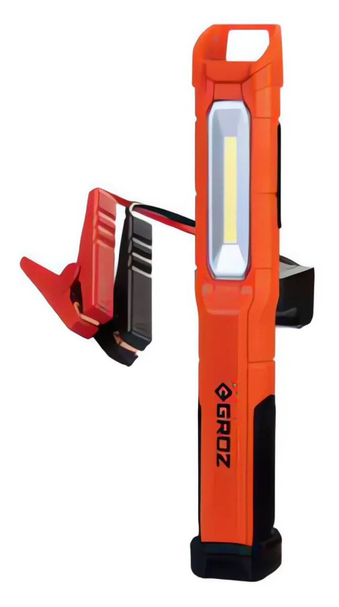

GROZ · LED Worklights
Worklight Jump Starter
CAT NR LED/346 · ORD NR 55112
| CAT NR (catalogue number) | LED/346 |
|---|---|
| ORD NR (order number) | 55112 |
| Size (inch) | 13-5/64 × 2-11/64 × 2-3/32 |
| Size (mm) | 332 × 55 × 53 |
| Box quantity | 20 |
| Run time | 4 HRS |
| Battery | 11.1V 2600 mAh Li-Ion |
| LED type | 7W COB |
| IK rating | IK07 |
Open in the catalogue The catalogue PDF, page 44-45
From the GROZ Lighting GL-10 catalogue. Not yet verified: these details were read from the printed catalogue automatically; check the catalogue page before ordering.